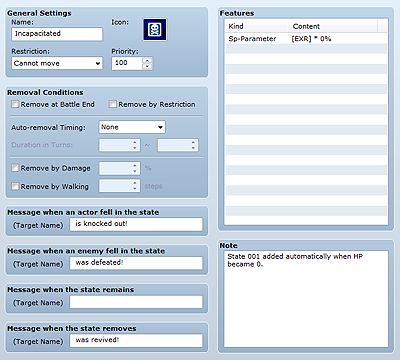

States are an abnormal status that impacts a character's health and actions and include things like poison and confusion. You must set the specific effects for when each state is applied. Note that not all states are negative, such as HP being reduced by poison. You can also define positive states, such as ATK being increased by a character getting excited.
State number 001 (knockout) is a special state that is automatically applied when an actor or enemy's HP falls to zero. The game is over if this state is applied to all party members.

The name of the state. States are displayed using icons, so the name you set here will not actually be used in-game.
The image to display with the actor's name while in the state. Double-clicking it displays the Icon dialog box where you can specify an image. Specify an image that makes the state easily identifiable.
A restriction on actions by the character in this state. Specify using the following six items. When multiple restrictions are applied, the one at the bottom of the list takes precedence.
There are no restrictions on actions.
The character will always attack an enemy.
The character will always attack either an enemy or an ally.
The character will always attack an ally.
The character will not be able to take any sort of action.
The priority (0 to 100) for displaying state icons. When multiple states have been applied, the state icon that has a higher value for this setting will be displayed. When state icons have the same priority, the one with the most recent ID is given preference.
Conditions for removing the state. Specify using the following items. When multiple conditions are set, removal is determined by each of those standards.
The state is removed once the battle is over.
The state is removed if a state with a different action restriction is applied.
The state is removed after the turn elapses. At End of Action removes the state once the actor's action is over, while At End of Turn removes it once the turn has ended and the game returns to action selection. In Duration in Turns, specify the minimum and maximum number of turns (0 to 9999) until the state is removed after it is first applied.
The state is removed at the specified probability (0 to 100%) when the target suffers some sort of damage.
The state is removed after moving the specified number of tiles (0 to 9999) on the map.
These are messages displayed when the state is applied/removed during battle. For each of the four situations provided (Message When Actor Enters State, Message When Enemy Enters State, Message When State Remains, and Message at State Removal) specify a message to display after the target's name.
A list of features to give the target to which the state has been applied. See Setting Features for more information.